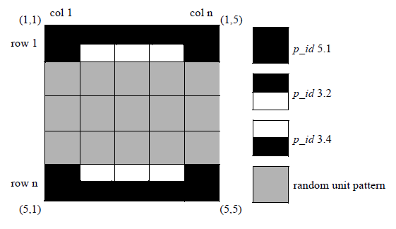

calibre -lsg
The Calibre LSG software tool is run from a Linux command line with an LSG options file.
Calibre LSG generates layout clips that can be used for creating initial pattern libraries and other early design phase layout applications.
Usage
calibre ‑lsg [-turbo [number_of_processors]] lsg_options_file
Description
Calibre LSG argument options can be used to customize the layout clips to represent more realistic design structures that are nearly DRC clean.
You run Calibre LSG from a command line and specify an LSG options file (lsg_options_file) that contains the argument options specified as option=value. The format of the command syntax in the LSG options file is one argument option per line as shown:
pattern_count=10
pitch_size=0.1
pattern_height=8
pattern_width=15
output_folder=LSG_OUTArguments
- ‑lsg
A required argument specifying to run Calibre LSG from the command line.
- lsg_options_file
A required argument specifying an input file containing the argument options for running Calibre LSG. The options in this file are formatted as option=value. Specify this argument from the Calibre LSG command line.
- -turbo [number_of_processors]
An optional argument and value enabling multithreaded parallel processing. Specify this argument from the Calibre LSG command line.
The optional number_of_processors value is a positive integer that specifies the number of CPUs to use. If you do not specify number_of_processors, Calibre LSG runs on the maximum number of CPUs available for which you have licenses. See “Calibre Command Line” in the Calibre Administrator’s Guide for more information.
- pattern_count=pattern_count
A required keyword and argument specifying the number of the layout clips that are output. This keyword must be specified if pattern_row_count and pattern_col_count are not specified. Specify this number as a positive integer.
This keyword is not used if the “systematic” keyword is specified. See “SPG Flow Options” for more information.
- pattern_row_count=pattern_row_count
A required keyword and argument specifying the number generated rows of layout clips. This keyword is used in conjunction with pattern_col_count and must be specified if pattern_count is not specified. Specify this number as a positive integer.
- pattern_col_count=pattern_col_count
A required keyword and argument specifying the number of generated columns of layout clips. This keyword is used in conjunction with pattern_row_count and must be specified if pattern_count is not specified. Specify this number as a positive integer.
- pitch_size=pitch_size
A required keyword and argument that defines the edge length of a square unit pattern with symmetric pitch. This keyword must be specified if pitch_width and pitch_height are not specified. Specify this number as a positive floating‑point number in microns. The minimum value is 0.002 microns. For example, for a pitch of a 64 nm, specify pitch_size as follows:
pitch_size=0.064- pitch_width=pitch_width
A required keyword and argument that defines the width for a unit pattern with asymmetric pitch. Use this keyword in conjunction with the pitch_height keyword. This keyword must be specified if pitch_size is not specified. Specify this number as a positive floating‑point number in microns. The minimum value is 0.002 microns.
- pitch_height=pitch_height
A required keyword and argument that defines the height of a unit pattern with asymmetric pitch. Use this keyword in conjunction with the pitch_width keyword. This keyword must be specified if pitch_size is not specified. Specify this number as a positive floating‑point number in microns. The minimum value is 0.002 microns.
- pattern_size=pattern_size
A required keyword and argument that specifies the size of one layout clip in terms of the number of unit patterns used to form the clip side. A layout clip is made up of multiples of unit patterns. A pattern_size of 10 means a layout clip pattern of 10 x 10. This keyword must be specified if pattern_width and pattern_height are not specified. Specify this value as a positive integer number.
- pattern_width=pattern_width
A required keyword and argument that specifies the width of a layout clip in terms of the number of unit patterns used to form the layout clip width. Use this keyword in conjunction with the pattern_height keyword to create a rectangular layout clip. This keyword must be specified if pattern_size is not specified. Specify this value as a positive integer number.
- pattern_height=pattern_height
A required keyword and argument that specifies the height of a layout clip in terms of the number of unit patterns used to form the layout clip height. Use this keyword in conjunction with the pattern_width keyword to create a rectangular layout clip. This keyword must be specified if pattern_size is not specified. Specify this value as a positive integer number.
- output_folder=output_dir
A required keyword and argument defining the name of the output directory for temporary files and the generated layout clips.
- output_format={OASIS | GDSII}
An optional keyword and argument specifying the format of the output layout clip database. If not specified, format defaults to OASIS.
- priority_file=priority_file_name
An optional keyword and argument specifying the name of the priority or weight file. This file contains the weights for selecting the unit patterns and rotations.
- custom_unit_patterns=./unit_def.conf
An optional keyword and argument specifying the path and filename of a unit pattern definitions file. This file may contain both default and custom unit pattern definitions. See “Unit Patterns Definition File Format”.
- margin=margin_size
An optional keyword and argument specifying the margin between the generated layout clips. Specify this space as a floating-point number in microns. The margin keyword is overridden if specified with the margin_vertical or margin_horizontal keywords. The default margin space is 2 * pitch_size.
- margin_vertical=margin_vert
An optional keyword and argument specifying the vertical margin between layout clips. Specify this space as a positive or negative floating‑point number in microns. You can control the spacing between the layout clips as follows:
Specify a negative floating‑point number for overlapping layout clips.
Specify a zero for no space between layout clips.
Specify a positive floating‑point number for a space between layout clips.
The margin_vertical keyword can be specified with the margin_horizontal keyword and overrides the margin keyword. The default vertical margin space is 2 * pitch_height.
- margin_horizontal=margin_horiz
An optional keyword and argument specifying the horizontal margin space between the layout clips. Specify this space as a positive or negative floating‑point number in microns. You can control the output as shown for the margin_vertical keyword.
The margin_horizontal keyword can be specified with the margin_vertical keyword and overrides the ‑margin keyword. The default horizontal margin space is 2 * pitch_width.
- layer=layer_number
An optional keyword and argument specifying the layout layer number for the generated layout clips. Specify this number as a positive integer. The default for layer_number is 200.
- output_file=output_file_name
An optional keyword and argument specifying the name of the output database file for the generated layout clips. A file extension of .oas or .gds is added to output_file_name, depending on the database format. The default database filename is lsg_output.oas for OASIS databases (default format) and lsg_output.gds for GDS format databases.
- rules=rules_file
An optional keyword and argument specifying additional unit pattern configuration and neighboring unit pattern rules. For more information, contact your Siemens EDA representative for rules that may be specific to your Calibre LSG run.
- drc=postfix_vars_file
An optional keyword and argument specifying a postfix variables filename. This file is used with other required input options to run a DRC‑fixing flow on the generated layout clips. See “Calibre LSG DRC‑Based Postfix” and “Postfix Options” and your Siemens EDA representative for more information on this flow.
- multi_pattern=multi_pattern_number
An optional keyword and argument specifying the number of patterns (mask layers) to be represented in the generated layout clips. Specify this number as a positive integer. If the specified number is not equal to one (1), the default behavior is to define the group of unit patterns for each layer.
For example, a double pattern ten sample layout clip is specified by the following command arguments in an LSG options file:
pattern_count=10 pitch_size=0.064 pattern_size=15 multi_pattern=2 priority_file=my_dp_weights rules=my_dp_rules.conf output_folder=my_out_dirUnit patterns from 1 to 5 belong to the first layer, and unit patterns from 6 to 10, which are a copy from unit pattern 1 to 5, belong to the second layer.
You can assign a specific layer number to each layer by defining layer IDs and assigning each layer ID a layer number using the layers_numbers argument. See the layers_numbers argument for format specifications. If specific layer numbers are not assigned to each layer, the layer numbers are assigned randomly.
You can define your own custom unit patterns (rather than using the basic unit patterns definitions) and generate multi‑pattern layout clips by specifying a unit patterns definition file and the multi_patterning and layers_numbers arguments. The unit_patterns_layer argument can also be specified with these options to define the unit patterns for specific layers. See “Unit Patterns Definition File Format” and the unit_patterns_layer argument for format specifications.
- layers_numbers=layers_numbers_file
An optional keyword and argument specifying the name of the SVRF file used to set a layer number to each specified layer ID. If layer numbers are not specified in this file, Calibre LSG assigns them randomly. The format specifies the LAYERS_IDS variable followed by the variables for the layer number assignment.
Constraints for the clip template definitions are as follows:
For example, assigning layer ID 1 to layer number 100, and layer ID 2 to layer number 20.5, respectively, is specified as follows:
VARIABLE LAYERS_IDS "1" "2" VARIABLE layer_1 100 VARIABLE layer_2 20.50- unit_pattern_layers=unit_pattern_layer_file
An optional keyword and argument specifying the name of the SVRF file used to map layer IDs to unit patterns. For example, this specifies to map layer ID 1 to unit pattern IDs 1 through 5 and layer ID 2 to unit pattern IDs 6 through 10:
VARIABLE UNIT_PATTERNS_layer_1 "1" "2" "3" "4" "5" VARIABLE UNIT_PATTERNS_layer_2 "6" "7" "8" "9" "10"- cell_name_prefix=cell_name_prefix
An optional keyword and argument specifying a cell name prefix for each layout clip. Each layout clip is saved in the output directory when cell_name_prefix is specified.
For example, if cell_name_prefix LSG is specified, the top cell is named LSG and the individual layout clips are named LSG_0, LSG _1, LSG _2, …. The layout clip files LSG_0.gds, LSG _1.gds, LSG _2.gds, … are saved in the output directory.
By default, the top cell is named “cell” and the individual layout clips are named “cell_0”, “cell_1”, “cell_2” …. The individual layout clips are not saved by default.
- clip_template=clip_template_file
An optional keyword and argument specifying the name of a rule file used to generate power rail‑like or cell boundary‑like structures in the layout clip. You define the structures by filling rows or columns with a unit pattern or by placing unit patterns at specific positions. Any undefined positions are filled with random patterns.
Constraints for the clip template definitions are as follows:
Definitions for rows, columns, and positions can be combined as long as a position is not defined more than once. An error is issued if clip template definitions specify the same position.
Keyword “n” can be used to define a last row, column, or position enabling clip template definitions to update with layout clip size changes.
Rows or columns can be defined along with a range of unit pattern positions to facilitate specification.
The clip template file contains SVRF Variable statements for the following parameters:
Row Fill
NUMBER_OF_DEFINED_ROWS J — Specifies the number J of row definition variables (DEFINED_ROWS_j) that are provided, where j goes from 1 to J.
DEFINED_ROWS_j “p_id” “row” [“row” …] — Fills one or more rows with a unit pattern p_id. Row numbers “row” start with 1 at the top.
You specify a “row” definition using the following definitions:
integer — A positive integer value.
n — A keyword “n” that specifies the last row number.
n ‑ x — An expression that specifies a row number relative to the last row, where x is a positive integer less than n.
For example, for a generated clip that is 5 x 5 with two rows of unit pattern 5.1 for the top rail and one row of unit pattern 3.2 for the bottom power rail (last row), the clip template file looks like this:
VARIABLE NUMBER_OF_DEFINED_ROWS 2 // two rows of pattern 5.1 at the top VARIABLE DEFINED_ROWS_1 "5.1" "1" “2” // one row of pattern 3.2 in row 5 VARIABLE DEFINED_ROWS_2 "3.2" "n"Figure 1. VARIABLE DEFINED_ROWSColumn Fill
NUMBER_OF_DEFINED_COLUMNS K — Specifies the number K of column definition variables (DEFINED_COLUMNS_k) that are provided, where k goes from 1 to K.
DEFINED_COLUMNS_k “p_id” “col” [“col” …] — Fills one or more columns with a unit pattern p_id. Column numbers “col” start with 1 at the left side.
You specify a “col” definition using the following:
integer — A positive integer value.
n — A keyword “n” that specifies the last column number.
n ‑ x — An expression that specifies a column number relative to the last column, where x is a positive integer less than n.
For example, for a generated clip that is 5 x 5 with last column of unit pattern 5.1 and first column of unit pattern 3.1, the clip template file looks like this:
VARIABLE NUMBER_OF_DEFINED_COLUMNS 2 // last column of pattern 5.1 at the right VARIABLE DEFINED_COLUMNS_1 "5.1" "n" //first column of pattern 3.1 at the left VARIABLE DEFINED_COLUMNS_2 "3.1" "1"Figure 2. VARIABLE DEFINED_COLUMNSPosition Definitions
NUMBER_OF_DEFINED_POSITIONS P — Specifies the number P of position definition variables (DEFINED_POSITIONS_p) that are provided, where p goes from 1 to P.
DEFINED_POSITIONS_p “p_id” “row,col” [“row,col” …] — Fills the one or more position with unit pattern p_id. Positions are defined with row and column numbers, starting with “1,1” at the top left.
You specify a “row,col” position definition using the following:
integer — A positive integer value.
n — A keyword “n” that specifies a last row or column number.
n ‑ x — An expression that specifies a position relative to a last row or column, where x is a positive integer less than n.
integer:n — A range from a positive integer value to n.
integer:n ‑ x — A range from a positive integer value to a position relative to a last row or column, where x is a positive integer less than n.
For example, for a 5 x 5 layout clip, the following clip template file places unit pattern 5.1 at the four corners, unit pattern 3.2 in the remaining positions in the top row, and unit pattern 3.4 in the remaining positions in the bottom (last) row.
VARIABLE NUMBER_OF_DEFINED_POSITIONS 3 // define four corners of 5 x 5 grid using specified positions VARIABLE DEFINED_POSITIONS_1 "5.1" "1,1" "1,5" "5,1" "5,5" // define row 1, columns 2, 3, and 4 using a range of positions VARIABLE DEFINED_POSITIONS_2 "3.2" "1,2:4" // define row 5, and columns 2, 3, and 4 using a range of positions VARIABLE DEFINED_POSITIONS_3 "3.4" "n,2:4"Figure 3. VARIABLE DEFINED_POSITIONS- highlight_layer={layer_number | layer_number.datatype}
An optional keyword and argument specifying the layout layer number for a highlight layer that covers the pattern extents in the generated layout clips. Specify a positive integer for layer_number (default datatype 0) or a layer number and datatype combination for layer_number.datatype. Valid layer numbers range from 0 to 65535. The highlight_layer option can be specified in conjunction with the highlight margin options.
- grid_layer={layer_number | layer_number.datatype}
An optional keyword and argument generating a grid layer for each output clip. Specify a positive integer for layer_number (default datatype 0) or a layer number and datatype combination for layer_number.datatype. Valid layer numbers range from 0 to 65535. For example,
grid_layer=50.2The grid is generated in the form of separated rectangles with the size assigned to the cells. The size of each grid rectangle is equal to the size assigned to the cell under it. The grid rectangles are sized down by 1 dbu to create a separation between the cells. The grid size follows ungrid_values if specified.
The behavior of the grid_layer option is as follows:
In the case of postfix (drc option), the grid output layer is preserved after the postfix run.
In the case of run_post_fix_only, on a previously generated layout with grid_layer, you must define the generated grid layer in the configuration file of the stand‑alone postfix run. This preserves the grid layer and includes it in the resultant layout.
In case of margin specifications with negative values, the grid layer overlaps at the boundaries.
- highlight_layer_text=text_value, output_layer_number
An optional keyword and arguments specifying an output text layer that is a highlight layer on the generated layout. This option attaches a user-defined text string to a highlight‑layer polygon. The text string is appended with the incremented cell name. The highlight_layer option does not need to be specified with this option. For example:
highlight_layer_text=this_is_cell_number, 80.1If the cell name is “cell 31”, then the displayed text is as follows:
this_is_cell_number31The arguments are defined as follows:
text_value — Specifies a literal text string. This text displays at the bottom left corner of the highlight‑layer polygon.
output_layer_number — Specifies the layer number or layer number and datatype for the output text layer.
- text_layer=text_value, attached_layer_number, output_layer_number
An optional keyword and arguments specifying an output text layer that is attached to a layer (metal or highlight) in the generated layout. For example:
text_layer=metal2_layer_polygon,46.4,33The arguments are defined as follows:
text_value — Specifies a literal text string. This text displays at the bottom left corner of every polygon in the attached layer.
attached_layer_number — Specifies the layer number or layer number and datatype of the polygon layer to which the text is attached.
output_layer_number — Specifies the layer number or layer number and datatype of the output text layer.
- xorigin=Xvalue
An optional keyword and argument specifying the value for the starting x‑coordinate for the bottom-left corner of the generated layout. You specify the Xvalue argument as a positive floating‑point number in microns. The default value is 0.
- yorigin=Yvalue
An optional keyword and argument specifying the value for the starting x‑coordinate for the bottom-left corner of the generated layout. You specify the Yvalue argument as a positive floating‑point number in microns. The default value is 0.
- precision=precision_value
An optional keyword and argument defining the database precision of the generated layout. The precision_value is the ratio of database units to user units. Preferably, the precision is specified as a positive integer. The default is 1000. For example, if the pitch size is 48 nm, and the precision is 2000, the pitch size in the generated layout is 96 nm, and if the precision is 1000 (default), the pitch size in the generated layout is 48 nm.
- flip_cells
An optional keyword specifying to vertically flip cells referenced in the even rows of the top‑cell merged layout. This is useful in the case where power rails are defined on different masks and you want to merge the cells to emulate standard cells.
- run_post_fix_only
An optional keyword specifying to run the postfix flow (drc option) stand‑alone with no layout generation. The postfix flow runs on the layouts defined by output_layout and output_folder to fix DRC violations. See “Calibre LSG DRC‑Based Postfix” or your Siemens EDA representative for more information on the postfix flow.
- resolve_contradicting_rules
An optional keyword specifying to resolve contradicting rules encountered during the run by adding an extra rule. The extra rule is written to the contradicting_rules_resolution_log file.
- no_merge
An optional keyword specifying not to merge the output layouts in the top cell. With this option, each generated layout clip is output to a separate layout file.
- systematic=spg_options_file
An optional keyword and argument enabling the systematic pattern generator (SPG) mode. This mode can be used to run the SPG flow for creating layout clips for all pattern combinations. The spg_options_file argument contains SPG options in the format option=value. See “Systematic Pattern Generator (SPG)” and your Siemens EDA representative for more information on this flow.
- ungrid_values=ungrid_values_file
An optional keyword and argument enabling ungrid (off‑pitch) patterning behavior as defined in the ungrid_values_file. See “Ungrid Values File Format”.
- margin_type={COMPACT | FIXED | MAXIMUM}
An optional keyword and argument defining the type of margin space to create between the generated layout clips.
Note:This option does not show any difference between the three types of margin spacing except when used with the ungrid_values option.
The margin spacing is based on the starting coordinate of the row and the calculated clip height and clip width for each margin_type as follows:
COMPACT (default behavior)
Each row starts from x‑coordinate = 0 and y-coordinate = maximum clip height of the previous row added to the vertical margin.
Each clip in the same row starts from x-coordinate = previous clip width added to the horizontal margin.
FIXED
Each row starts from x-coordinate = 0 and y‑coordinate = clip height of the corresponding clip in the previous row added to the vertical margin.
Each clip in the same row starts from x-coordinate = previous clip width added to the horizontal margin.
MAXIMUM
Each row starts from x-coordinate = 0 and y-coordinate = maximum clip height calculated from the specified ungrid_values added to the vertical margin.
Each clip in the same row starts from x-coordinate = maximum clip width calculated from the specified ungrid_values added to the horizontal margin.
- ungrid_variations_count=number
An optional keyword and argument specifying the number of ungrid (off‑pitch) variations for each clip within the same row. For example, if you define pattern_count=5 and ungrid_variations_count=8 with any of the ungrid_values options, this generates five different patterns, with eight ungrid variations for each pattern. The patterns are generated in five rows with each row containing eight columns. Specify this number as a positive integer.
You can also control the number of rows and columns using the pattern_row_count and pattern_col_count options instead of pattern_count.
- min_density=float_number_percentage
An optional keyword and argument specifying the minimum density required for each clip to be generated. This option is only used in SPG flow (systematic option) and cannot be specified with ungrid_values. If this option is used in the postfix flow (drc option), a warning is generated. The min_density value is a floating‑point number (zero to 100) expressed as a percentage. The default is 0.
- max_density=float_number_percentage
An optional keyword and argument only used in SPG mode specifying the maximum density required for each clip to be generated. This option is only used in SPG flow (systematic option) and cannot be specified with ungrid_values. If this option is used in the postfix flow (drc option), a warning is generated. The max_density is a floating‑point number (zero to 100) expressed as a percentage. The default is 100.
- share_same_horizontal_grid
An optional keyword specifying to share the same clip height based on the ungrid_values per row. The behavior is as follows:
The row ungrid_values are fixed per each clip in the same row of the layout.
The row ungrid_values are chosen randomly for the first clip in each row of the layout. All remaining clips share the same ungrid_values.
The column ungrid_values can be different for each clip in the same row of the layout.
The generated layouts each share different horizontal and vertical ungrid_values when the no_merge option or SPG DisableIncrementalOutputMerge is specified.
- share_same_vertical_grid
An optional keyword specifying to share the same clip width based on the ungrid_values per column. The behavior is as follows:
The column ungrid_values are fixed per each clip in the same column of the layout.
The column ungrid_values are chosen randomly for the first clip in each column of the layout. All remaining clips share the same ungrid_values.
The row ungrid_values can be different for each clip in the same column of the layout.
- final_clip_width=clip_width
An optional keyword and argument defining the width of the final output clip. Use this option when the generated patterns have different widths according to the ungrid_values. This option clips the patterns with a constant mask to make them the same size. Specify the clip_width as a positive floating point number in microns.
- final_clip_height=clip_height
An optional keyword and argument defining the height of the final output clip. Use this option when the generated patterns have different heights according to the ungrid_values. This option clips the patterns with a constant mask to make them the same size. Specify the clip_height as a positive floating point number in microns.
- highlight_left_margin=left_margin_value
An optional keyword and argument defining the margin value between clip layers and the highlight layer from the left edge. Use this option to define positive or negative margins between the clip and the highlight layer specified by the highlight_layer option. Specify the left_margin_value as a floating point number in microns.
The general behavior of the highlight margin options is as follows:
The enabled highlight margin option controls the highlight layer to be larger or smaller than the generated clip.
The start of the layout from the defined x‑ and y‑coordinate is from the bottom left of the highlight layer of the first clip.
The highlight margin is calculated between the highlight layers of the clips even if the highlight layer is smaller than the original clip.
- highlight_right_margin=right_margin_value
An optional keyword and argument defining the margin value between clip layers and the highlight layer from the right edge. Use this option to define positive or negative margins between the clip and the highlight layer specified by the highlight_layer option. Specify the right_margin_value as a floating point number in microns.
The highlight_right_margin option follows the general behavior of the highlight margin options.
- highlight_top_margin=top_margin_value
An optional keyword and argument defining the margin value between clip layers and the highlight layer from the top edge. Use this option to define positive or negative margins between the clip and the highlight layer specified by the highlight_layer option. Specify the top_margin_value as a floating point number in microns.
The highlight_top_margin option follows the general behavior of the highlight margin options.
- highlight_bottom_margin=bottom_margin_value
Am optional keyword and argument defining the margin value between clip layers and the highlight layer from the bottom edge. Use this option to define positive or negative margins between the clip and the highlight layer specified by the highlight_layer option. Specify the bottom_margin_value as a floating point number in microns.
The highlight_bottom_margin option follows the general behavior of the highlight margin options.
- highlight_horizontal_margin=left_right_margin_value
An optional keyword and argument defining the margin value between clip layers and the highlight layer from the left side and right sides. Use this option to define positive or negative margins between the clip and the highlight layer specified by the highlight_layer option. Specify the left_right_margin_value as a floating point number in microns.
The highlight_horizontal_margin option follows the general behavior of the highlight margin options.
- highlight_vertical_margin=top_bottom_margin_value
An optional keyword and argument defining the margin value between clip layers and the highlight layer from the top and bottom edges. Use this option to define positive or negative margins between the clip and the highlight layer specified by the highlight_layer option. Specify the top_bottom_margin_value as a floating point number in microns.
The highlight_vertical_margin option follows the general behavior of the highlight margin options.
- highlight_all_margin=all_margin_value
An optional keyword and argument defining the margin value between clip layers and the highlight layer from the left, right, bottom, and top edges. Use this option to define positive or negative margins between the clip and the highlight layer specified by the highlight_layer option. Specify the all_margin_value as a floating point number in microns.
The highlight_all_margin option follows the general behavior of the highlight margin options.
Examples
Example 1
Here is an example of running Calibre LSG from a Calibre command line with an LSG options file:
calibre -lsg -turbo 8 lsg_options_file
Here is an example of the arguments specified in an LSG options file:
pattern_count=100
pitch_size=0.1
pattern_height=10
pattern_width=15
output_folder=LSG_OUT
priority_file=./inputs/weights_M1
output_file=lsg_outExample 2
Here is an example of a 5 x 5 layout clip using the clip_template keyword “n” to define the last column with unit pattern p_id 5.1:
VARIABLE NUMBER_OF_DEFINED_COLUMNS 2
VARIABLE DEFINED_COLUMNS_1 "5.1" "n"
VARIABLE DEFINED_COLUMNS_2 "3.3" "1"
If the layout clip size changes to 5 x 8, the clip template keeps the same pattern characteristics: